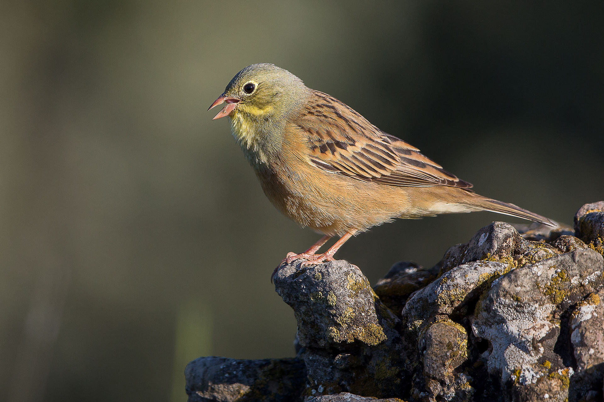
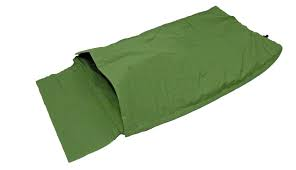
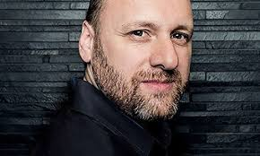
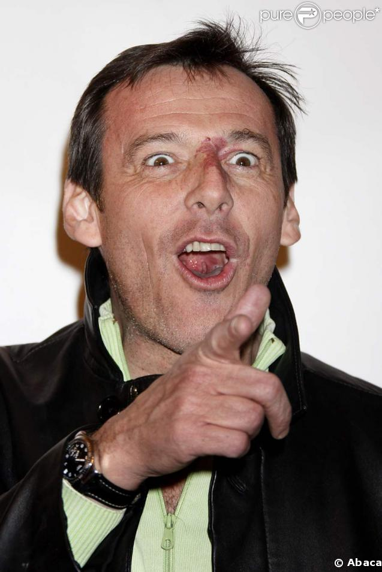

C'est un petit oiseau chanteur, mesurant de 16 à 16,5 centimètres de longueur, pour une envergure comprise entre 24 et 27 centimètres et une
masse allant de 19 à 27 grammes3. Le mâle a le dessous du corps rosâtre, la poitrine et la tête verdâtre, la gorge jaune, le dos brun-roux rayé de noir, les ailes brun-noir liserées de roux et coupées transversalement de deux fines barres blanches, le bec rose à marron clair et les pattes roses à brun jaune. Un cercle orbital jaune entoure chaque œil marron foncé.
L'espèce est en diminution dans au moins dix pays d'Europe. On estime la population totale à 400 000 / 600 000 couples. En France, il a disparu de 17 départements entre 1960 et 1990 et diminué dans 7 autres départements. En 1992, la population française d'ortolans était estimée à 15 000 couples. Elle est certainement nettement moins nombreuse aujourd'hui puisque l'espèce a disparu de nombreuses régions où elle était autrefois présente5.
The birds are caught with nets set during their autumn migratory flight to Africa. They are then kept in covered cages or boxes. The birds react to the dark cage by gorging themselves on grain, usually millet seed, until they double their bulk. Roman Emperors stabbed out ortolans’ eyes in order to make the birds think it was night, making them eat even more. The birds are then thrown into a container of Armagnac which both drowns and marinates the birds.[7]
Couramment employé par les jeunes et les rappeurs de nos jours, le mot swag a pourtant une origine bien plus lointaine. Il dériverait de l'anglais to swagger employé dès le XVIe par Shakespeare et signifiant fanfaronner. Car le swag n'est pas qu'une question de vêtements, il se rapporte aussi à l'attitude et à l'allure.
David Cage défend un jeu vidéo tourné vers l'émotion et proposant une mise en scène proche du cinéma1. En octobre 2017, le magazine L'Express le surnomme le « Godard du pixel »1.
Néanmoins, une partie de la presse spécialisée le critique très sévèrement, estimant qu'il est un mauvais scénariste2,3,4,5 et que ses productions délaissent l'interactivité au profit des cinématiques - ce qui en ferait de mauvais jeux vidéo6,7.
Son grand-père (de religion juive) a dû s'expatrier de Slovaquie pour échapper au nazisme. Il a alors trouvé refuge en France4.
Il a comme marque de naissance une tache de vin sur le nez. Dans son enfance, sa mère tente en vain de la lui retirer à coup de séances de laser à l'hôpital. Lorsqu'il anime Les Z'amours, il masque cet angiome derrière du fond de teint, puis décide de l'assumer et de le montrer5. Son père, Pierre Reichmann, était directeur d'un supermarché de l'enseigne Mammouth à Toulouse6 (« Mammouth Gramont » qui fut remplacé
En 2000, Hervé Hubert, producteur du Bigdil, lui propose de rejoindre TF1 pour y animer la tranche du midi. Ensemble ils développent Attention à la marche !. L'émission débute le 10 mars 2001, d'abord le week-end puis toute la semaine dès septembre et ce 364 jours par an à midi (le 14 juillet elle n'est pas diffusée en raison du défilé de la Fête nationale).